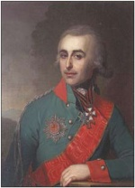
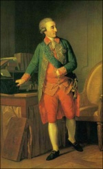
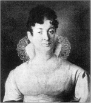
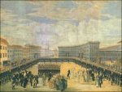
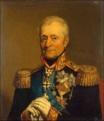
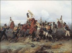
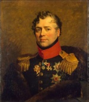
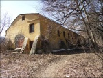
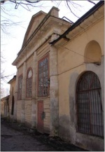

Страницы авторов "Тёмного леса"
Литературный Кисловодск и окрестности
Пишите нам! temnyjles@narod.ru
Это имя едва ли широко известно за пределами круга специалистов по "наполеоновской эпохе". П.А. Толстой считается военачальником второго плана, хотя он был достаточно успешным полководцем - правда, главным образом в Европе, а не в России.
|  | Портрет графа Петра Александровича Толстого. В.Л. Боровиковский. Холст, масло. 1799 год |
Петр Александрович Толстой, происходивший из орловской ветви графов Толстых, состоял в родстве с видным военным и государственным деятелем генерал-фельдмаршалом графом Николаем Ивановичем Салтыковым (1736-1816), а также с Голицыными - урожденной княжной Голицыной была его бабка Анна Михайловна Измайлова{1}.
В энциклопедиях годом рождения П.А. Толстого обычно указывается 1761-й. Однако из современной ему литературы следует весьма противоречивая датировка этого события. Известно такое сообщение: когда П.А. Толстой получил Георгиевский крест (1794), ему исполнилось 24 года, следовательно, он родился в 1769 или 1770 году{2}. В некрологе П.А.Толстого сообщается, что в 1785-м ему было 17 лет: в этом случае дата его рождения - 1767 или 1768 год{3}.
Подобно пушкинскому Петруше Гриневу, П.А. Толстого в 1775 году записали капралом в лейб-гвардии Преображенский полк, однако реально службу он начал только в 1785-м уже подпоручиком, флигель-адъютантом в штабе Н.И. Салтыкова и в том же году был переведен в армию подполковником с назначением генерал-адъютантом при том же Н.И. Салтыкове.
П.А. Толстой - участник русско-шведской войны (1788-1790) и подавления Польских восстаний (1792, 1794). В 1792 году он зачисляется в Ингерманландский карабинерный полк, в 1793-м переводится в Псковский драгунский полк, 28 июня 1794 года за отличие в бою под Брестом получает чин полковника{4}.
По семейной легенде, назначение в Псковский полк было связано со свадьбой П.А. Толстого. "Своей женитьбой на богатой княжне Голицыной получил он один из двух только во всей России четырехтысячных полков - Псковский драгунский полк, чтобы он деньгами своей жены поправил положение полка. Тогда говорили, что этот полк был дан Петру Александровичу потому, что никто его не принимал, так он был расстроен в финансовом отношении братом Петра Александровича, командовавшим тогда этим полком"{5}. Однако свадьба П.А. Толстого состоялась только в 1795 году. Его женой стала княжна Мария Алексеевна Голицына, старшая дочь "первого русского мартиниста"{6} генерал-майора князя Алексея Борисовича Голицына (1732-1792). Она, в ранней юности лишившаяся отца и в детстве матери, воспитывалась под особым покровительством Екатерины II "по всем строгим правилам приличий двора, умения жить в свете и в страхе Божием"{7}. Большое состояние, унаследованное от родителей, сделало ее одной из богатейших и, следовательно, желанных невест, хотя красавицей М.А. Толстая, судя по портрету, не была{8}. По свидетельству историка П.Ф. Карабанова, Марию отличали благочестие и "ум оригинальный с необыкновенными странностями"{9}.
Посол Наполеона в Петербурге генерал Анн Жан Мари Рене Савари писал о М.А. Толстой в "Листках новостей", отсылаемых им в Париж, как о важном лице петербургского общества{10}. В августе 1805 года она была награждена женским орденом Святой Екатерины меньшего креста, то есть 2-й степени. Столь же видную роль М.А. Толстая играла и в Москве, где окончательно обосновалась после Отечественной войны 1812 года. Именно ее устрашился грибоедовский Фамусов, воскликнувший: "Что будет говорить княгиня Марья Алексеевна!"
У П.А. и М.А. Толстых родилось пятеро сыновей - Алексей (1798-1864){11}, Александр (1801-1873){12}, Георгий (1803-1874){13}, Владимир (1805-1875){14}, Иван (1811-1852){15} и четыре дочери - Евдокия (1795-1863){16}, Софья (1800-1886){17}, Анна (1802-1884){18}, Александра (1804-1858){19}.
|  | Портрет Н.И. Салтыкова. И.-Ф. Тишбейн. Холст, масло. XVIII век |
|  | Портрет графини Марии Алексеевны Толстой. Репродукция с картины неизвестного художника. 1810-1820 годы |
В год свадьбы П.А. Толстой, получил Георгиевский крест 4-й степени за штурм предместья мятежной Варшавы - Праги{20}. Реляция фельдмаршала А.В. Суворова сообщала, что "граф Толстой, командуя двумя баталионами, во главе колонны с первыми взошел на батарею и овладел ею, где и ранен в руку"{21}.
В 1797 году П.А. Толстой стал генерал-майором и шефом Нижегородского драгунского полка, вскоре Павел I сделал его своим генерал-адьютантом и наградил орденом Святой Анны 1-й степени. Уже в 1799 году Петр Александрович производится в генерал-лейтенанты и направляется в армию австрийского эрцгерцога для координации ее действий с действиями суворовских частей. Однако вскоре по возвращении он высылается из столицы. В.Н. Геттун вспоминал рассказ Петра Александровича о том, как последний "впал было в немилость императора Павла I и велено было ему выехать из С[анкт]-Петербурга в три дня"{22}. Немного позже Павел I разрешил П.А. Толстому вернуться, опрометчиво простив всех военных, по разным причинам выгнанных им со службы. Недовольные составили заговор, как известно, окончившийся убийством несчастного императора в Михайловском замке. К ним примкнул и Толстой, имевший основания опасаться за прочность своего положения{23}.
После вступления на престол Александра I П.А. Толстой назначается военным губернатором Выборга и инспектором кавалерии Финляндской инспекции (1802), а через полгода переводится в должность петербургского военного губернатора и вскоре становится командиром лейб-гвардии Преображенского полка, в котором начинал службу, и Гвардейского корпуса. В то время им был заведен обычай дарить солдатам-именинникам по серебряному рублю, а унтер-офицерам - по два. Однажды, чтобы иметь деньги для раздачи, П.А. Толстой даже заложил бриллианты своей жены{24}.
|  | Вручение новых знамен лейб-гвардии Преображенскому полку 2 января 1798 года. М.М.Иванов. Бумага, карандаш, акварель, гуашь. XVIII век |
|  | Портрет Л.Л. Бенигсена. Дж.Доу. Холст, масло. 1821 год |
В 1805 году П.А. Толстой, ставший генерал-адъютантом, во главе двадцатитысячного десантного корпуса отплыл в Померанию для действий в Северной Германии против французов под началом шведского короля Густава-Адольфа. После Аустерлицкого сражения корпус вернулся в Россию. Александр I в 1806 году назначил Толстого своим представителем при штабе командования русской армии. Когда армию возглавил генерал Л.Л. Беннигсен, П.А. Толстой сначала выполнял обязанности дежурного генерала при нем, а позже командовал резервом.
|  | Подвиг конного полка в сражении при Аустерлице в 1805 году. Б.П. Виллевальде. Холст, масло. 1884 год |
В 1807 году Александр I назначил П.А. Толстого чрезвычайным послом во Францию, но его выбор оказался неудачен: Петр Александрович, настроенный антифранцузски, в своих донесениях рекомендовал организовать новую коалицию с Австрией и Пруссией и неоднократно просил отставки. После заключения Тильзитского мира он даже в нарушение дипломатического этикета не принял в присутствии Александра I от Наполеона орден Почетного легиона, сказав, что не заслужил столь высокой награды{25}.
В конце концов многочисленные просьбы П.А. Толстого об отставке были удовлетворены. Вернувшись в Россию, он получил маловажную должность инспектора рекрутского депо и жил в основном либо в Москве, либо в своем имении Троицком на Зуше Чернского уезда Тульской губернии, где держал конный завод{26}. С этого времени Петр Александрович начал серьезно заниматься сельским хозяйством.
Во время Отечественной войны 1812 года Александр I поручил П.А. Толстому возглавить один из трех округов внутреннего губернского ополчения - 3-й, или Низовой, центр которого находился в Нижнем Новгороде. В 1813 году отряды, возглавляемые П.А. Толстым, образовали особый корпус и вошли в состав польской армии Л.Л. Беннигсена, воевавшей в Богемии.
После возвращения на родину - уже генералом от инфантерии (до войны он отказался принять это звание) - П.А. Толстой в 1816 году был назначен командующим 5-м пехотным корпусом, расквартированным в Москве и ее окрестностях{27}. Рядом с местом новой службы оказалось большое имение Узкое, унаследованное Марией Алексеевной по разделу с сестрами от брата Е.А. Голицына в 1811 году. Судя по тому, что имя Е.А. Голицына еще как минимум два года продолжало значиться в официальных документах, имеющих отношение к Узкому{28}, никто из новых владелиц за это время усадьбу не посетил. В 1812 году от Узкого и входившей в состав имения деревни Нижние Теплые Станы в Московское земское ополчение взяли 11 ратников{29}. Указанная цифра дает возможность подсчитать общее количество крестьян в Узком: в ополчение забирали каждого десятого. Французская армия выступила из сожженной Москвы по Старой Калужской дороге, разоряя расположенные вдоль нее села и деревни. В "Ведомости, учиненной в Московском земском суде о владельческих селениях с показанием претерпенных ими от нашествия неприятеля разорений" по Московскому уезду отмечено, что в Узком "отнято <...> хлеба 2500 четвертей, сена 4700 пудов, лошадей 28, коров 30, баранов, овец 90, разграблена церковь, господский дом, имущество дворовых людей и крестьян, хлеб и весь скот, всего на сумму 124877 рублей"{30} - ущерб грандиозный.
|  | Портрет Д.В. Голицына. Дж. Доу. Холст, масло. 1823 год |
В московском доме Толстых в Леонтьевском переулке сформировался кружок из лиц, осознавших необходимость развития земледелия и сельского хозяйства как основы народного благосостояния{31}. Становление кружка по времени примерно совпадает с появлением декабристских "Союза благоденствия" и "Союза спасения". И здесь, и там костяк составляли боевые офицеры. Разница была лишь в возрасте и, следовательно, в чинах. Интерес к сельскому хозяйству проявляли люди достаточно зрелые, пожившие, достигшие определенного положения, тогда как вокруг "Союзов" группировалась преимущественно молодежь. Первые считали, что лучшее будущее страны обеспечат земледельческие новации. Вторые не видели будущего без более радикальных преобразований.
Кружок культурных помещиков, тесно связанный с военной и гражданской администрациями города, "легализовался" в виде Императорского Московского общества сельского хозяйства - первой подобной организации в России{32}. Общество возглавил старый приятель П.А. Толстого князь Д.В. Голицын, назначенный генерал-губернатором Москвы. Петр Александрович стал вице-президентом. Его соседями по подмосковному имению оказались не менее деятельные члены Общества: другому вице-президенту князю С.И. Гагарину принадлежало Ясенево{33}, отставному генерал-майору А.И. Герарду - Большое Голубино{34}, полковнику князю Н.С. Меншикову - Черемушки-Знаменское, коллежскому асессору А.А. Бекетову - Зюзино-Борисоглебское{35}. Все это способствовало формированию своеобразного "культурно-хозяйственного очага", который можно оценивать как важнейший центр рационализации сельского хозяйствования в Центральном Нечерноземье того времени{36}.
Благодаря П.А. Толстому, страстному любителю и знатоку садоводства, в Узком было организовано хорошо развитое оранжерейное хозяйство, приносившее значительные доходы: "Он основал <.> великолепные оранжереи и теплицы, славящиеся поныне во всем округе"{37}. Кроме сооруженных еще при Голицыных Больших оранжерей, частично сохранившихся до сих пор, появились более десяти новых. Здесь выращивались ананасы, персики и абрикосы, а также другие экзотические для средней полосы России культуры. Много редких растений росло на открытом воздухе, имелся вишневый сад, в прудах разводили рыбу{38}.
17 февраля 1825 года годичное собрание Императорского Московского общества сельского хозяйства наградило П.А. Толстого золотой медалью "в ознаменование своего уважения и признательности к ревностному усердию, оказанному Вашим сиятельством при самом основании и учреждении Общества, а равно и к постоянному содействию Вашему в трудах и занятиях онаго"{39}. Впоследствии такую же медаль получил и С.И. Гагарин.
За "спокойствие Москвы" в день восстания на Сенатской площади П.А. Толстому была прислана Андреевская лента - знак высшего российского ордена. Петра Александровича во время предполагавшегося декабристами выступления в Москве собирался арестовать его собственный адъютант - ротмистр князь Н.И. Трубецкой{40}. Участником подготовки выступления был и другой адъютант Толстого - штабс-капитан лейб-гвардии драгунского полка А.В. Шереметев, двоюродный брат Ф.И. Тютчева{41}. После подавления восстания П.А. Толстой возглавил комитет, определявший степень вины заговорщиков.
М.А. Толстая при коронации Николая I была пожалована в статс-дамы и получила орден Святой Екатерины уже большого креста - высшую женскую награду России: "Чин статс-дамы - дан ранг выше всех, даже и фельдмаршальских жен, большой же крест ордена святыя Екатерины в таком уважении, что кроме принцесс и самых наизнатнейших дам никто его не получает. Лента носится с правого плеча на левую сторону так, как орден св. Андрея. Звезда на левой стороне, портрет государыни рядом со звездой. Ленту можно всякий день и не носить, а только по большим праздникам, портрет прилично носить часто, а звезду почти всегда на себе иметь, когда одеваться"{42}.
С этого времени Петр Александрович был "употребляем в важнейших Государственных комитетах по назначению императора"{43}, сделавшись одним из ближайших сподвижников Николая I. После смерти супруги (1826){44}, граф вместе с сыном Иваном, дочерьми Софьей, Анной и Александрой унаследовал Узкое. Роскошный городской особняк и подмосковное имение в совокупности составляли всего лишь седьмую часть огромного наследства, оставленного Марией Алексеевной{45}. Несмотря на наличие нескольких официальных владельцев, хозяйством в имении, как и раньше, занимался П.А. Толстой.
В 1828 году он основал в Москве общество любителей садоводства.
Полководческая деятельность П.А. Толстого закончилась тем же, с чего и началась - подавлением очередного Польского восстания. В 1831 году Петру Александровичу вновь довелось побывать в этом непокорном крае - на сей раз в качестве главнокомандующего Резервной (впоследствии 3-й) армии, действовавшей в Литве. По окончании кампании его наградили золотой шпагой с алмазами и надписью "За изгнание польских мятежников"{46}.
В результате раздела с детьми, состоявшегося 31 июля 1836 года{47}, П.А. Толстой стал единственным владельцем Узкого. Тогда он исполнял обязанности московского генерал-губернатора вместо испросившего отпуск Д.В. Голицына и чаще посещал свое имение. "У графа Толстого есть подмосковная, называемая Узкое, и он четыре дня проводит там, а три бывает в Москве"{48}, - записал в дневнике московский почт-директор А.Я. Булгаков, который зафиксировал также реакцию А.С. Пушкина на это назначение: "Приехал граф Петр Александрович, да не Румянцов-Задунайский, а Толстой-Узкой"{49}. Пушкин явно считал военные заслуги графа эфемерными по сравнению с заслугами П.А. Румянцева-Задунайского, фигурирующего в "Воспоминаниях в Царском Селе" как "Перун кагульских берегов". Во всяком случае, очевидно, что название толстовской усадьбы было поэту знакомо. Видимо, на отношение А.С. Пушкина к П.А. Толстому наложили отпечаток их личные контакты. 7 октября 1828 года Пушкин по вызову Толстого - тогда управляющего главным штабом по военным поселениям, главного начальника военных поселений, главнокомандующего войсками в Петербурге и Кронштадте - явился на заседание комиссии, занимавшейся расследованием дела о распространении поэмы "Гавриилиада". Поэт написал письмо Николаю I. 26 октября П.А. Толстой передал ему высочайший ответ, после чего А.С. Пушкин был освобожден от ответственности по делу. Копия пушкинского письма сохранилась в архиве родственников П.А. Толстого Бахметевых{50}.
|  | Узкое. Северный флигель. Фотография 1935 года |
|  | Большие оранжереи в усадьбе Узкое. Восточное крыло и павильон. Фотографии автора. 2007 год |
В 1839 году Петр Александрович окончательно вернулся в Москву и вплотную занялся ведением хозяйства в Узком. В издаваемом историком М.П. Погодиным журнале "Москвитянин" отмечено, что граф вел размеренный и спокойный образ жизни: "Лето проводил обыкновенно в подмосковной <...> посреди сельских работ и занятий, напоминая самою простотою своей жизни что-то древнее. Досуги свои он посвящал семейству и тем, с которыми любил беседовать"{51}. Лицейский товарищ Пушкина М.А. Корф также свидетельствовал: "Последние годы своей жизни Толстой проводил опять постоянно в Москве или в подмосковном своем имении Узком, имев позволение не приезжать в Петербург и заниматься страстно цветами - единственной вещью в мире, которую он не считал "плевым делом"{52}.
По делам Общества сельского хозяйства к П.А. Толстому в Узкое неоднократно наведывался экономист С.А. Маслов, бывший секретарем этой организации. "Издание журнала{53} и сношения Общества внутри и вне России, возложенные на непременного секретаря, обязывали меня докладывать графу П[етру] Александровичу] о предметах переписки общества, как официальной, с Министерством государственных имуществ, так и частной, а потому я нередко приезжал к нему <...> и имел утешение видеть, как он принимал к сердцу относящееся до чести Общества и пользы общественной"{54}.
Гордость не позволила П.А. Толстому после смерти Д.В. Голицына отказаться от избрания его 2 мая 1844 года президентом Общества, но силы его уже были на исходе. Вскоре он скончался в своем московском доме. В тот день Петр Александрович, по свидетельству С.А. Маслова, собирался уехать на несколько дней в Узкое, "чтобы посмотреть, как поставили в оранжереи и простенки растения, и подышать дней пять свежим воздухом. "Не задерживайтесь, граф, в деревне, - сказал я ему, - уже время позднее, осеннее, да и нам без вас скучно". - "Нет, брат, я скоро возвращусь, а там начнем и наши заседания". Провожая, он взял меня за руку и с сердечной добротою сказал: "Прощай, брат Степан Алексеевич, до свидания". Можете себе представить, как поразило меня случайно долетевшее на другой день известие, что гр[аф] П[етр] Александрович] скончался; я не верил слуху, пошел в дом графа и нашел его на столе спокойно сомкнувшего глаза навеки"{55}.
Похоронили П.А. Толстого в Донском монастыре рядом с женой{56}. Памятник над могилами супругов не сохранился.
{1} Материалы для полной родословной росписи князей Голицыных, собранные князем Н.Н. Голицыным. Киев, 1880. С. 18, 86.
{2} См.: Граф Петр Александрович Толстой / Москвитянин. 1844. N10. С. 416-420.
{3} Некролог графа Петра Александровича Толстого / Журнал сельского хозяйства и овцеводства. 1844. N10. С. 97.
{4} Граф Петр Александрович Толстой / Москвитянин. 1844. N. 10. С. 416-420.
{5} Записки графа Федора Петровича Толстого. М., 2001. С. 55.
{6} Серков А.И. Русское масонство. 1731-2000 гг. Энциклопедический словарь. М., 2001. С. 251.
{7} Записки графа Федора Павловича Толстого. С. 83.
{8} Портрет М.А. Толстой кисти В.А. Тропинина находится в Государственном музее искусств Грузии.
{9} Гофмейстерины, статс-дамы и фрейлины русского двора. XVIII и XIX вв. Списки П.Ф. Карабанова, приведенные в порядок, дополненные и обставленные примечаниями кн. А.В. Лобановым-Ростовским. СПб., 1872. С. 47.
{10} См.: Андроникашвили Б. Потомки Вахтанга VI в России. К 200-летию Георгиевского трактата / Литературная Грузия. 1983. N3. С. 196-197.
{11} Толстой Алексей Петрович - генерал-лейтенант, с 1850 г. сенатор, управляющий отделением Сената в Варшаве, владелец усадьбы Знаменское-Аксиньино (ныне в черте Москвы).
{12} Толстой Александр Петрович - камергер (с 1830), действительный статский советник и тверской губернатор (с 1834), генерал-майор, Одесский военный губернатор и управляющий гражданской частью в городе (18371840), начальник нижегородского ополчения (1855), генерал-лейтенант и обер-прокурор Святейшего Синода (1856-1862), затем член Государственного совета. Владелец большого имения Троицкое на Зуше (Тульская губ.), унаследованного от отца. Был женат на княжне Анне Егоровне Грузинской (1798-1889). В их московской квартире в доме Талызиных сжег вторую часть "Мертвых душ" и скончался Н.В. Гоголь.
{13} Толстой Георгий Петрович - генерал-лейтенант, действительный статский советник, в 1819 г. поступил на службу в Углицкий полк в чине подпрапорщика, с 1821 г. - в лейб-гвардии Егерском полку, с мая 1827-го - флигель-адъютант. Участвовал в войнах с Персией (1826-1828), Турцией (1828-1829) и в Польской кампании (1830-1831). В мае 1835 г. был причислен к Министерству внутренних дел, но через два года вышел в отставку, по выборам московского дворянства занимал должность совестного судьи (1847-1850). Казанский военный губернатор, (1850). Калужский военный и гражданский губернатор (1851-1854), таганрогский градоначальник (1854-1856). В июле 1859 г. руководил подавлением бунта крестьян в Спасском уезде Тамбовской губ. Пензенский губернатор (1859-1861), сенатор (с 1861). Был женат на княжне Варваре Петровне Трубецкой.
{14} Толстой Владимир Петрович - генерал-майор. Был женат на графине Софье Васильевне Орловой-Денисовой (1817-1885).
{15} Толстой Иван Петрович - действительный статский советник, унаследовал усадьбу Знаменское-Аксиньино от брата Алексея. Был женат на графине Софье Сергеевне Строгановой (1824-1852).
{16} Толстая Евдокия Петровна, замужем за графом Александром Дмитриевичем Гурьевым (1787-1865). А.Д. Гурьев, действительный статский советник, в 1812 г. вступил в 3-й округ внутреннего губернского ополчения, в 1813-м был назначен бригадным начальником 1-го Казанского и 3-го Нижегородского ополченских полков, затем откомандирован с двумя пешими и одним уральским казачьим полками в авангард действующей армии. Участвовал в ряде боев и стычек с наполеоновскими войсками, отличился в сражении при Дрездене, награжден орденом Святого Георгия 4-й степени, был комендантом Дрездена. В 1814 г. зачислен на военную службу в чине генерал-майора, в 1822-м назначен Одесским градоначальником, в 1825-м определен состоять при военном министре. Член Военного совета военного министерства, генерал-лейтенант (1827), сенатор (1828), генерал-губернатор Киевской, Волынской и Подольской губ. (1832), позже Полтавский и Черниговский военный губернатор, затем Киевский военный губернатор с управлением гражданской частью, а также Подольский и Волынский генерал-губернатор (1835). В 1837 г. перешел на гражданскую службу с производством в действительные тайные советники, возглавлял департамент государственной экономии в Государственном совете.
{17} Толстая Софья Петровна, замужем за генерал-майором графом Владимиром Степановичем Апраксиным (1796-1833), владельцем подмосковной усадьбы Ольгово (Дмитровский уезд) и орловской Брасово (ныне пос. Локоть Брянской обл.). Из Ольгова происходят два великолепных портрета П.А. Толстого, выполненных в 1799 г. В.Л. Боровиковским. Ныне один из них является украшением собрания литературоведа И.С. Зильберштейна, которое стало основой Музея личных коллекций в Москве. В литературе эта картина ошибочно названа портретом Н.А. Толстого, написанным в 1800-х гг. (см.: Зильберштейн И.С. Первый в мире / Наше наследие. 1988. N1. С. 17). Другой портрет П.А. Толстого находится в фондах Музея-заповедника "Дмитровский Кремль" в г. Дмитрове Московской обл. В.С. Апраксин - внук Владимира Борисовича и Натальи Петровны Голицыных, участник Отечественной войны 1812 г., во время заграничного похода отличился в сражениях при Дрездене и Кульме, удостоившись ордена Святого Владимира IV степени; за отличие в "битве народов" под Лейпцигом произведен в подпоручики; сражался при Фер-Шампенуазе, брал Париж, в апреле 1814 г. переведен в лейб-гвардии Конный полк. Флигель-адъютант (с 1817), генерал-майор свиты (с 1831).
{18} Толстая Анна Петровна, замужем за адъютантом П.А. Толстого корнетом, впоследствии ротмистром лейб-гвардии Конного полка Алексеем Ивановичем Бахметевым (1801-1861). А.И. Бахметев управлял Московской дворцовой конторой, был председателем Московского Славянского благотворительного общества (с 1858), состоял попечителем Московского учебного округа (1858-1859). Гофмейстер. Изучал технологию производства стекла в Лейпциге и продолжил семейное стекольное дело в имении Николо-Пестровка (Пензенская губ.). Брак был бездетным, поэтому предприятия А.И. Бахметева по наследству достались сыну его племянницы князю А.Д. Оболенскому. К А.П. Бахметевой от родителей и братьев перешла часть семейной переписки, содержавшая любопытные сведения по истории усадьбы Узкое и некоторые деловые бумаги, в том числе реестры ризниц церквей в Узком, Троицком, а также святителя Николая в Хлынове - в приходе последней находился московский дом Толстых в Леонтьевском пер. (ЦИАМ.Ф. 1845, оп. 1, д. 15, л. 1-5).
{19} Толстая Александра Петровна, замужем за графом Александром Николаевичем Мордвиновым (1799-1856 или 1858), с 1849 г. - владелица имения Троицкое на Зуше. Мордвинов А.Н. - коллежский советник, камергер, художник-любитель, учившийся у М.Н. Воробьева. В Севастопольском художественном музее им. П.М. Крошицкого находится его картина "Вид Венеции" (1851). Первым браком А.Н. Мордвинов был женат на Анастасии Алексеевне Яковлевой (?-1833). О Мордвиновых см.: Мемуары графа С.Д. Шереметева. Т. 3. М., 2005. С. 108.
{20} Шильдер Н.К. Дипломат поневоле / Исторический вестник. 1896. N6. С. 824.
{21} Посольство графа П.А. Толстого в Париж в 1807 и 1808 гг. От Тильзита до Эрфурта. СПб., 1893. С. XX.
{22} Геттун В.Н. Записки собственно для моих детей / Исторический вестник. 1880. N1. С. 279.
{23} Эйдельман Н.Я. Герцен против самодержавия. Секретная политическая история России XVIII-XIX веков и Вольная печать. М., 1984. С. 256.
{24} Геттун В.Н. Указ. соч. С. 292.
{25} Там же. С. 296.
{26} ЦИАМ.Ф. 1845, оп. 1, д. 443; Записки графа Е.Ф. Комаровского. М., 1990. С. 111. Троицкое на Зуше было очень большим имением, в его состав, помимо собственно Троицкого, входили деревни Булычи, Красное Озеро, Орловка и Тросна (Зуша - название речки). Подробнее см.: ГАТО.Ф. 111, оп. 1, д. 1-757.
{27} Некролог графа Петра Александровича Толстого. С. 101.
{28} ЦИАМ.Ф. 383, оп. 1, д. 188, л. 19 об.; Алфавит владельцам, ставившим со своего имения в Московское земское ополчение воинов // Московское дворянство в 1812 году. М., 1912. С. 281.
{29} Там же.
{30} ЦИАМ.Ф. 383, оп. 1, д. 188, л. 19 об.
{31} Некролог графа Петра Александровича Толстого. С. 98.
{32} Существовало до 1930 г.
{33} ЦИАМ.Ф. 483, оп. 5, д. 35, л. 1 об.
{34} Там же. Ф. 383, оп. 1, д. 11, л. 21, 55, 55 об., 56-58 об.; д. 188, л. 14, 18, 48. См. также: Коробко М.Ю. Большое Голубино // Усадебное ожерелье Юго-Запада Москвы. М., 1997. С. 141-142.
{35} Там же. Ф. 66, оп. 5, д. 727, л. 2-2 об., 3-3 об., 66; ф. 203, оп. 744, д. 2353, л. 353 об., 405 об.; Коробко М.Ю. Москва усадебная. М., 2005; Острова Е.В., Перфильева Л.А. Черемушки: к истории создания дворца в усадьбе Меншиковых // Русская усадьба. Вып. 2 (18). М., 1996. С. 150; Перфильева Л.А. Черемушки-Знаменское // Усадебное ожерелье Юго-Запада Москвы. М., 1997. С. 20-26.
{36} Козлов С. А Аграрные традиции и новации в дореформенной России (центрально-нечерноземные губернии). М., 2002. С. 348-349.
{37} Шетинг Д.О. Древний Сосенский стан Московского уезда // Сергеев И.Н. Царицыно-Суханово. Люди, события, факты. М., 1998. С. 411. Д.А. Шеппинг мог видеть в Узком только Большие оранжереи, построенные еще во времена Голицыных.
{38} Коробко М.Ю. Усадьба Узкое: историкокультурный комплекс XVII-XX веков. М., 1996. С. 29.
{39} ЦИАМ.Ф. 419, оп. 1, д. 43, л. 6.
{40} Записки А.И. Кошелева // Русское общество 40-х-50-х годов XIX в. Ч. I. М., 1991. С. 52. Трубецкой Николай Иванович (1797-1873) - князь, обер-гофмейстер, сенатор, член Государственного совета.
{41} Декабристы. Биографический справочник. М., 1988. С. 199; Мемуары графа С.Д. Шереметева. М., 2005. С. 301.
{42} Татищев Ю.В. Письма князя А.А. Безбородко к Я.Л. Бакушинскому. М., 1907. С. 13.
{43} Некролог графа Петра Александровича Толстого. С. 103-104.
{44} "Новая потеря в кругу знатных дам. К общему сожалению родных и знакомых своих на 25 число прошедшего декабря скончалась здесь после кратковременной болезни супруга генерала графа Петра Александровича Толстого, графиня Мария Алексеевна, урожденная княжна Голицына. Она была статс-дама и кавалер ордена св. Екатерины" (Дамский журнал. 1827. N2. С. 69). М.А. Толстую похоронили в Донском монастыре.
{45} ЦИАМ. ' Ф. 66, оп. 5, д. 1750, л. 6, 17 об.
{46} См.: Шилов Д.Н. Государственные деятели Российской империи. Главы высших и центральных учреждений. 1802-1917. Биобиблиографический справочник. СПб., 2002. С. 749.
{47} ЦИАМ.Ф. 66, оп. 5, д. 1750, л. 6, 17 об.
{48} "У тебя целый архив Сан-Франциско в твоем архиве." Из "Современных записок и воспоминаний." А.Я. Булгакова. Записи 1836-1859 гг. // Встречи с прошлым. Вып. 9. М., 2000. С. 32.
{49} Там же.
{50} ЦИАМ.Ф. 1845, оп. 1, д. 564. См. также: Гурьянов В.П. Письмо Пушкина о "Гавриилиаде" / Пушкин. Исследования и материалы. Т. VIII. С. 287-288; Лернер Н.О. Заметки Пушкина о "Гавриилиаде" // Книга и революция. 1921. N8-9. С. 118; Рукою Пушкина. Несобранные и неопубликованные тексты. М.-Л., 1935. С. 317-319.
{51} Граф Петр Александрович Толстой // Москвитянин. 1844. N10. С. 420.
{52} Из записок барона (впоследствии графа) М.А. Корфа / Русская старина. 1899. N12. С. 484.
{53} Имеется в виду печатный орган Общества - основанный в 1821 г. "Журнал сельского хозяйств и овцеводства" (первоначальное название - "Земледельческий журнал").
{54} Маслов С.А. Воспоминания о графе П.А. Толстом, 2-м Президенте Императорского Московского общества сельского хозяйства. Читаны в собрании Общества 21 ноября / Журнал сельского хозяйства и овцеводства. 1844. N12. С. 307.
{55} Он же. О последних днях жизни графа Петра Александровича Толстого (письмо к действительному] члену [Императорского Московского общества сельского хозяйства] А.Ф. Реброву) // Там же. 1844. N10. С. 107-108.
{56} Некролог графа Петра Александровича Толстого. С. 97.
Последнее изменение страницы 19 Nov 2018
{kind=link}
{kind=link}
{kind=link}
{kind=link}
{kind=link}
{kind=link}
{kind=link}
{kind=link}
{kind=link}